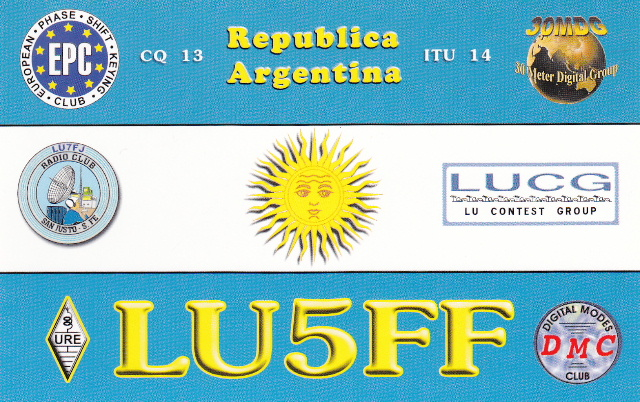

Flash ! DX


 |
|
|
|
 |
|
|
[Back Issues Jun.2012]
TIME:UTC(JST-09:00)
Report from JA1RJU(PM95sq)
30.Jun.2012(15:00c)
BA4SI 23:33 50.105 CW
HL1BDH 23:35 50.095 CW
DS2XUM 23:36 50.108 CW
---------------------------------------------------------------
(LA9DFA 04:55 50.093 CW JA8)
(OE4VIE 05:05 50.089 CW JA8)
HL2UVH 07:52 50.085 CW
(OH3XR 08:47 50.097 CW JA2.3)
(OH1LEU 09:15 50.095 CW JA6)
(F8DFP 09:39 50.025 CW JA3)
(F5BZB 09:55 50.084 CW JA1)
(OG2M 09:55 50.084 CW JA1)
Report from JA1RJU(PM95sq)
29.Jun.2012(15:00d)
OH1XT 22:50 50.097 CW
BA4SI 23:15 50.106 CW CQ
OH8UV 23:38 50.090 CW
(OH6WW 23:48 50.098 CW JA0)
SK2AT 23:50 50.085/50.097 CW
---------------------------------------------------------------
OH1XT 00:00 50.097 CW CQ
OH1XT 00:04 50.097 CW @ RST579
(UX2HO 04:40 50.0895 CW JA8)
(LA8AJA 04:53 50.084 CW JA8)
SM2A 05:04 50.086 CW @
SM3GSK 05:11 50.092 CW @
OH3XR 05:35 50.1087 CW @
SG3U 05:43 50.088 CW @
OH1UM 05:48 50.0996 CW
SM5FVH 06:27 50.092 CW @ RST579
SM5SDX 06:34 50.0945 CW @
OH1XT 06:36 50.097 CW
OH2ZZ 06:38 50.084 CW @ RST579
OH1XX 06:43 50.0826 CW @ RST579
OH2ZZ 06:45 50.0846 CW @
UT7QF 06:55 50.0983 CW @
OH7UE 07:07 50.0878 CW @ RST599
OH4MDY 07:16 50.092 CW @
OH1XT 07:18 50.0973 CW CQ
OH8LQ 07:38 50.092 CW
OH4MDY 07:42 50.092 CW
OH1XT 07:43 50.0972 CW CQ
OH6CT 08:13 50.084 CW @ RST599
OH8UV 08:15 50.089 CW CQ
PA2M 08:17 50.092 CW CQ
PC7M 08:44 50.083 CW
PA2M 08:55 50.0936 CW @ RST579
PC5C 09:04 50.099 CW @
|
◎ 今年初めて早朝から、ヨーロッパが入感するFBなコンデションに恵まれた。 早朝のオープンは22:00z頃から始まったが、入感エリアはJA1でも北関東地域が良く、信号のレベルにはかなり地域差が認められた。 コンデションは時間の経過と共に南西方向に移動したが、長続きせず00:30zにはほとんどフェードアウトした。 ヨーロッパの2度目のオープンは午後2時前から再び始まった。コンデションはJA8の北日本から始まり、ほとんど同時に関東地方でも入感が認められた。 今日のオープンエリアはOH、SMなど北欧方面が良く、JA側のコンデションはまもなく東日本から西日本へと移動、全国的に賑わった。 信号は強力で、ヨーロッパ側のアクティビティも多かったため、JA側のパイルアップも分散され比較的QSOは順調に行われた。 午前中同様、入感するエリアには地域差があり、パイルアップ無しで簡単にQSO出来る局もあった。 北欧から始まったコンデションは、最後はPA/PC(オランダ)に移り、JA1エリアでは09:20z頃にはフェードアウトした。 今日のオープンは"Esマルチホップ"の伝搬と言うよりもF2での入感に似た安定した信号もあった。 出遅れ気味の今年のコンデションだが、何処まで続くか興味のあるところ。 |
Report from JA1RJU(PM95sq)
28.Jun.2012(15:00b)
SP7EXY.4Z1UF.SV1DH.4X4DK.etc CW
05:40-08:27 CW JA8)
BA4SI 09:30 50.105 CW CQ
N7ET/DU7 09:34 50.110 CW CQ CQ
Report from JA1RJU(PM95sq)
27.Jun.2012(15:00b)
(4Z1UF 06:00 50.084 CW JA8)
(UX7LT 07:14 50.097 CW JA8)
(LZ2DF 07:47 50.080 CW JA8)
Report from JA1RJU(PM95sq)
26.Jun.2012(15:00c)
DS4DBS 04:50 50.100 RTTY
4Z1UF 06:35 50.087 CW
4Z1UF 06:37 50.0873 CW @ RST559 QSB
HL1BDH 06:48 50.097 CW
HL4CCM 07:16 50.085 CW
SV1DH 07:50 50.102 CW
4Z1UF 08:00 50.0873 CW CQ JA RST559-579
SV8MQP 08:36 50.082 CW
BA4MY 08:55 50.0958 CW CQ
4Z1UF 09:03 50.0873 CW CQ JA UP1
Report from JA1RJU(PM95sq)
25.Jun.2012(15:00c)
BY8AC 01:45 50.102 CW CQ
BY8AT 02:04 50.105 CW @ RST599
BA8AG 05:10 50.099 CW
BH4SQE 05:13 50.096 CW CQ
Report from JA1RJU(PM95sq)
24.Jun.2012(15:00d)
BA4SD 00:53 50.091 CW
HL4CHH 02:21 50.101 CW
BA4SD 02:23 50.091 CW CQ
DS4DBF 02:50 50.100 (RTTY) CQ
DS4DBF 03:02 50.105 CW
BA4SI 09:29 50.107 CW
BD8ASG 09:31 50.107 CW CQ
BD8ASG 09:52 50.107 CW @ RST599
Report from JA1RJU(PM95sq)
23.Jun.2012(15:00e)
BD4KYA 00:39 50.120 CW CQ JA6/JA8 Es strong!
BM3GFU 00:40 50.120 CW
HL2WP 00:50 50.101 CW CQ
BU2AV 00:52 50.096 CW
BY8AC 01:39 50.101 CW CQ
HL1LUA 01:42 50.105 CW
DS5TOS 02:38 50.150 SSB
DS2KGJ 02:39 50.163 SSB
HL4CHH 02:43 50.102 CW/SSB CQ
BA4SD 05:44 50.105 CW
DS4EOI/2 06:33 50.098 CW CQ DX
6K5BHZ 07:26 50.101 CW
HL2WP 07:30 50.112 CW CQ
BA1KW 08:37 50.104 CW CQ
BA4SI 08:42 50.104 CW
BA4SD 08:44 50.104 CW
BA1KW 09:01 50.104 CW @
BG4NMT 09:03 50.102 CW
BA7IO 09:03 50.096 CW
DS4EOI/2 09:04 50.098 CW CQ
Report from JA1RJU(PM95sq)
22.Jun.2012(15:00b)
Report from JA1RJU(PM95sq)
21.Jun.2012(15:00b)
Report from JA1RJU(PM95sq)
20.Jun.2012(15:00c)
BD4KYA 03:32 50.120 CW
UN8GC 04:05 50.106 CW
Report from JA1RJU(PM95sq)
19.Jun.2012(15:00c)
BA4MY 06:13 50.100 CW CQ
S57RR 07:02 50.096 CW
UK9AA 08:06 50.096 CW
LZ2WO 08:05 50.096 CW
DS1LET 08:17 50.096 CW
BA4MY 08:19 50.096 CW
BA4SI 08:35 50.101 CW
Report from JA1RJU(PM95sq)
18.Jun.2012(15:00b)
Report from JA1RJU(PM95sq)
17.Jun.2012(15:00c)
AH0I 01:44 50.115 CW @ CQ RST599
AH0I 02:28 50.115 SSB @ OP.JF1IRW
AH0I 05:17 50.115 CW CQ CQ
Report from JA1RJU(PM95sq)
16.Jun.2012(15:00b)
AH0I 08:52 50.115 CW/SSB weak
AH0I 09:14 50.115 SSB CQ QSB
Report from JA1RJU(PM95sq)
15.Jun.2012(15:00b)
BV2DQ 01:22 50.105 CW CQ
BX4AG 01:45 50.110 CW
Report from JA1RJU(PM95sq)
14.Jun.2012(15:00b)
Report from JA1RJU(PM95sq)
13.Jun.2012(15:00d)
--------------------------------------------------------------------
KD2JA 2323Z 50087.0 559/559 I'm QSY on 50097.5 JL8GFB-#
CQ NA 2314Z 50087.0 N4WW,K4MM still open JL8GFB-#
K4PI 2305Z 50087.9 cq tnx qso JA4DND
K4PI 2258Z 50088.0 CQing 559 JR2HCB
K4PI 2254Z 50088.0 579/559 JL8GFB-#
VE2DLC 2248Z 50087.0 tu call still Opening !! JL8GFB-#
VY2ZM 2244Z 50080.8 I'm call tu HL3IUA-#
VY2ZM 2238Z 50087.0 I,m Call TU HL3IUA-#
VE9AA 2227Z 50087.0 599/449 tu call JL8GFB-#
VY2ZM 2223Z 50080.8 JH1GUL (QTH VE2=P.E Island)
VY2ZM 2213Z 50080.7 JA9LSZ-#
VY2ZM 2202Z 50085.1 QM05<>FN86 JE1BMJ
--------------------------------------------------------------------
LZ2WO 07:13 50.085 CW
EA7PM 08:05 50.084 CW
CT1HZE 08:14 50.085 CW
(CN8KD 08:25 50.084 CW JA8)
CN8KD 08:40 50.084 CW
CT1HZE 09:04 50.0855 CW
--------------------------------------------------------------------
CT1HZE 0914Z 50085.0 CQ JA 579 I'm on 50.097.5 CQ JL8GFB-#
CT1HZE 0902Z 50084.8 cqing JA1WLO-#
CT1FJK 0852Z 50083.4 CQ JA CQ JA JL8GFB-#
CT1EKY 0843Z 50087.0 CQ vCQ JL8GFB-#
CN8KD 0841Z 50084.0 JR2HCB
CN8KD 0840Z 50084.0 JH0INP
CT1HZE 0838Z 50085.0 vy loud sigs JL8GFB-#
CN8KD 0833Z 50084.0 correct QRG JL8GFB-#
CT1HZE 0828Z 50085.0 cqn. 559 JA1WLO-#
CN8KD 0825Z 50085.0 Wao TU New One !! JL8GFB-#
YO8MI 0817Z 50095.0 CQ JL8GFB-#
CT1HZE 0815Z 50085.0 529 JA pile JL8GFB-#
EA7RM 0800Z 50084.0 CQ 569 JL8GFB-#
EA5FX 0801Z 50088.0 tu JL8GFB-9
EA5FX 0759Z 50088.0 tu JL8GFB-#
EA7DUD 0757Z 50092.0 fb sigs JL8GFB-#
YO8ZY 0749Z 50098.4 called on top SP7AWG wkd both JL8GFB-#
SP7AWG 0743Z 50098.4 pse cpy JL8GFB-#
EA7RM 0743Z 50083.8 JH0INP
EA7RM 0737Z 50083.8 559 JR2HCB
EA7RM 0733Z 50083.8 539.... JL8GFB-#
DK2PH 0719Z 50092.6 599! JR2HCB
EA3GP 0717Z 50072.0 559 FB tnx JA3EGE-#
OH7RJ 0716Z 50099.0 559 HRD JR2HCB
ON4GG 0713Z 50095.3 559 CQ JR2HCB
DK2PH 0705Z 50094.0 JO TKS JA3EGE-#
ON4GG 0701Z 50095.0 559 TKS JA3EGE-#
SP5CFD 0657Z 50099.0 559 HRD JR2HCB
F6ARC 0654Z 50087.0 Try here PSE JL8GFB-#
EA3DT 0645Z 50090.0 in QSO getting loud JL8GFB-#
EA7AH 0644Z 50088.0 VY QSB JA5QJD
EA7AH 0642Z 50087.0 559 FB JA3EGE-#
EA3DT 0635Z 50090.0 539 cant hear me ... JL8GFB-#
EA3AKY 0626Z 50097.1 579 no takers JL8GFB-#
---------------------------------------------------------------------
Report from JA1RJU(PM95sq)
12.Jun.2012(15:00b)
LZ2WO 07:33 50.0856 CW JA1.2.3-
KL7KY 08:25 50.094 CW
Report from JA1RJU(PM95sq)
11.Jun.2012(15:00c)
KH7Y 23:52 50.105 CW CQ Test RST599
-----------------------------------------------------------
KH7Y 00:00 50.105 CW CQ
NW0W 00:28 50.0285 CW
KA9CFD 00:43 50.042 CW
HL3IUA 00:56 50.105 CW calling KH7Y
AH7C 01:27 50.115 CW
Report from JA1RJU(PM95sq)
10.Jun.2012(15:00e)
KH7Y 00:50 50.105 CW CQ TEST
BD9BA 00:59 50.105 CW
KH7Y 01:22 50.100 CW @
KH7Y 01:40 50.100 CW RST599 "CQ TEST (RST/G.L)"
BA4SI 02:15 50.103 CW
BD9BA 02:34 50.1065 CW CQ JA
KH7Y 02:45 50.100 CW still good "CQ Test from BK29"
JE2LPC/BA4SI 02:48 50.100 CW QSO with KH7Y
BD8ASG 03:25 50.107 CW
KH7Y 03:30 50.100 CW Turned beam to NA (65 JA's & 2 BY's)
BY8AC 04:30 50.101 CW
BG4NMT 05:00 50.102 CW
HL1VAU 05:20 50.102 CW
HL1IBG 05:40 50.102 CW
4Z1UF 06:58 50.0977 CW weak QSB
4Z1UF 07:39 50.0977 CW listening 1UP
EA6SX 08:25 50.087 CW weak
Report from JA1RJU(PM95sq)
09.Jun.2012(15:00b)
BA4SI 23:50 50.102 CW CQ NA
--------------------------------------------------------
DS4EOI/2 00:17 50.107 CW
DS4EOI/2 02:24 50.117 SSB
Report from JA1RJU(PM95sq)
08.Jun.2012(15:00b)
BY8AC 07:34 50.102 CW CQ
Report from JA1RJU(PM95sq)
07.Jun.2012(15:00c)
BY8AC 03:55 50.102 CW
BA8AT 03:58 50.105 CW
BA8AT 04:03 50.105 CW @
BY8AC 05:18 50.102 CW CQ
BA8AT 05:18 50.105 CW CQ
Report from JA1RJU(PM95sq)
06.Jun.2012(15:00c)
HL1LUA 01:15 50.108 CW @
HL1IBG 06:30 50.087 CW
HL1BDH 06:50 50.108 CW
DS4EOI/2 06:55 50.089 CW
HL1IBG 08:24 50.087 CW
HA7TM 08:28 50.1023 CW weak
HL1VAU 09:06 50.081 CW
DS4EOI/2 09:10 50.089 CW CQ EU
UN8GC 13:30 50.105 CW weak
Report from JA1RJU(PM95sq)
05.Jun.2012(15:00b)
VK6RSX/b 08:40- 50.304 CW Beacon
BD4CZX 12:57 50.110 SSB CQ RS59
Report from JA1RJU(PM95sq)
04.Jun.2012(15:00b)
Report from JA1RJU(PM95sq)
03.Jun.2012(15:00b)
◎6/2日～6/3日のリポートは休止します
--------------------------------------------------------
AA7A 04:41 50.097 CW QM06
VE6TA 04:48 50.100 CW QM06
--------------------------------------------------------
UT4UO 06:35 50.0984 CW
Report from JA1RJU(PM95sq)
02-03.Jun.2012(15:00b)
◎6/2日～6/3日のリポートは休止します
--------------------------------------------------------
OH2AUK 06:17 50.081 CW QM06
OH3XA 07:14 50.084 CW QM06
OH1ND 07:16 50.084 CW QM06
OH3JR 07:18 50.084 CW QM06
SM1LTD 07:20 50.084 CW QM06
SM4EMO 07:23 50.084 CW QM06
SM6CMU 07:24 50.084 CW QM06
SK0TM 07:26 50.084 CW QM06
OH1XD 07:27 50.084 CW QM06
SM5EDX 07:49 50.098 CW QM06
SM7GVF 08:30 50.089 CW QM06
DK3WG 08:42 50.081 CW QM06
OK1WD 08:50 50.098 CW QM06
--------------------------------------------------------
Report from JA1RJU(PM95sq)
01.Jun.2012(15:00b)